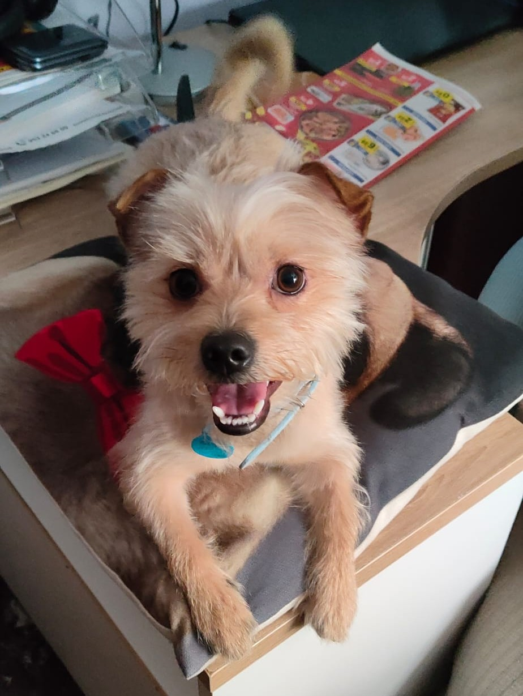
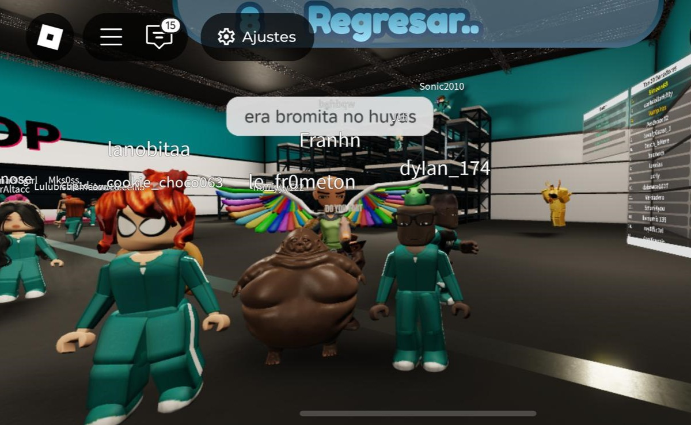
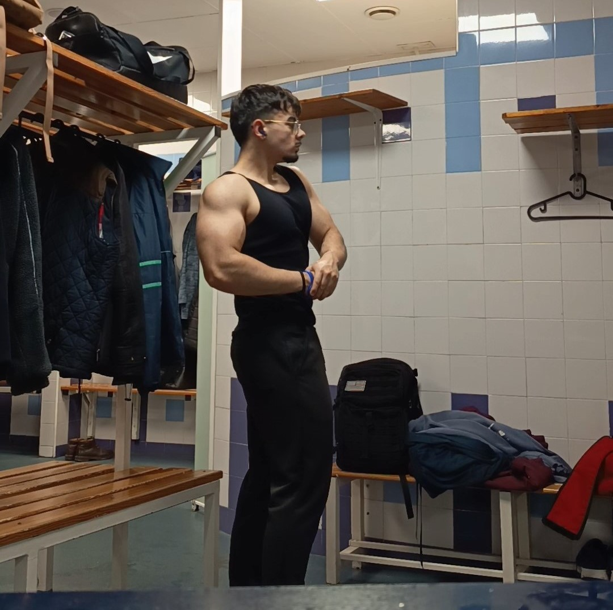
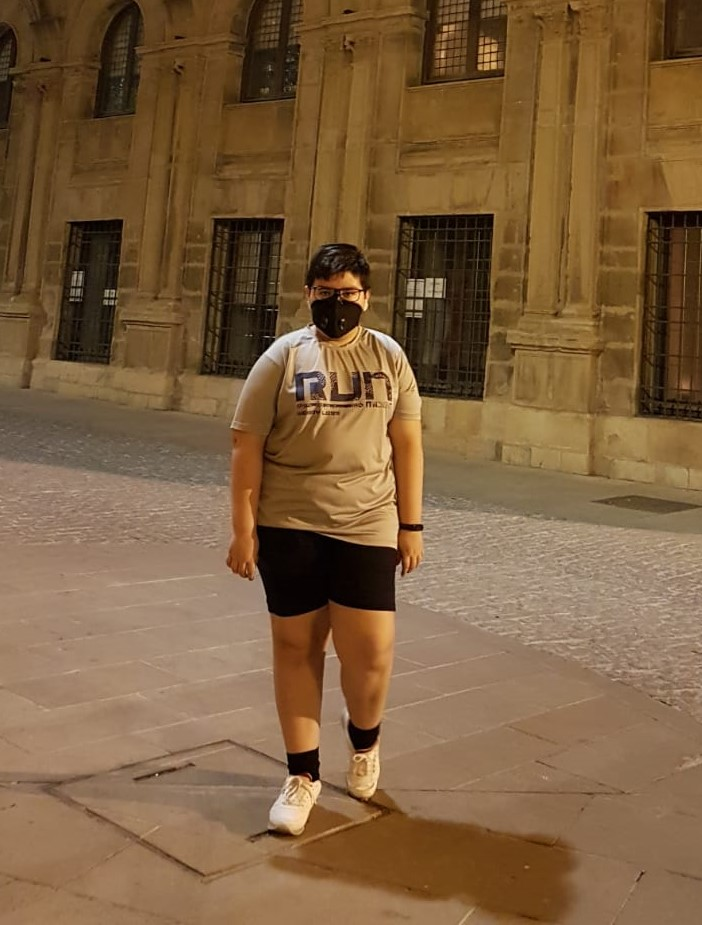

Francisco Higueras Navarrete
Soy una persona simple, me gusta hacer las cosas de manera rápida pero que sean funcionales.
Mi objetivo: Tener un trabajo que me guste y ganar con el mucho dinero.
.png)
Soy una persona simple, me gusta hacer las cosas de manera rápida pero que sean funcionales.
Mi objetivo: Tener un trabajo que me guste y ganar con el mucho dinero.
|
Estudiante de 2º de Bachillerato. Me interesa la IA, la medicina y la idea de llegar a ser alguien exitóso en el futuro. Me gusta lo que estoy viendo actualmente en clase, la programación, ya sea en python o la creación de páginas webs mediante HTML. Bachillerato me está dando ciertos problemas, pero estoy tratando de enfocarme para sacarlo lo mejor posible, además no solo me centro en sacar buenas notas, sino en aprender todo lo que puedan ofrecerme mis profesores. Cada día intento estudiar un poco para no dejar todo para última hora. Y espero que en algún futuro pueda conseguir el trabajo de mis sueños, pero por ahora en 2026 busco terminar bachillerato con mi salud mental intacta. Un detalle que no suele saber mucha gente sobre mí es que hay ciertas teorías filosóficas que realmente me llaman la atención y me parecen un buen método para llevar la vida de otra manera. También tengo un perro que se llama Polvorón, es un nombre curioso del que la gente se suele reír pero cuya personalidad no pega nada con su nombre. |
 |
Fuera del tiempo escolar, desconecto mediante actividades que me gustan. Por ejemplo:
Si quieres saber más sobre mí, puedes seguirme en mi instagram
 |
 |
| Un ejemplo de lo que juego | Una foto en el gimnasio |
Durante mi vida he conseguido ciertos progresos que me gusta recordar para saber todo lo que he logrado y de donde vengo.
 |
.jpeg) |
|
| Cambio físico: es uno de mis mayores logros y es que pasé de pesar 102kg con 12 años a pesar 67Kg con 15, aunque actualmente me encuentro en 80Kg con mucha más masa muscular. | Notas: cuando entré en el instituto mis notas no eran como las de ahora, que aunque no eran del todo malas, nunca me convencían y he conseguido acabar primero de bachiller con un 9,66 de media. | Inglés: aunque este vaya en parte relacionado con el anterior prefiero destacarlo por separado, y es que yo siempre había sido nulo en idiomas pero recientemente creo que tengo un mayor control del inglés. |